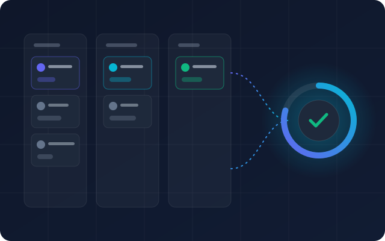

Resumate.ch – Modernes Job-CRM & Matching
Eigenverantwortliche Konzeption, Architekturplanung und Fullstack-Entwicklung eines modernen Job-CRMs und Matchmaking-Portals für den Schweizer Arbeitsmarkt.
- Reaktives Frontend mit React, TypeScript und intuitivem Talent-Pipeline-Management
- Skalierbares Backend mit Node.js, Supabase, PostgreSQL & Row-Level-Security
- Automatisierte Parser & Algorithmen zur Profil- und Stellenanzeigen-Analyse
React
TypeScript
Node.js
Supabase
PostgreSQL
Tailwind CSS